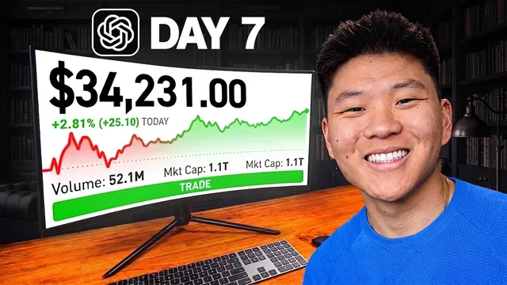

GPT-6 Astra에게 1만 달러 주고 주식을 맡겨봤다

원본 영상 보기 →
- 여러 번 깨어나는 에이전트는 '인수인계 메시지'로 하나처럼 만들어요
- 모델이 거부하는 단계는 '판단'과 '실행'을 분리해서 풉니다
- 보수적인 기본값은 '아무것도 안 하는 자동화'가 돼요
한 줄 요약
Nate Herk가 GPT-6 Astra에게 실제 돈 1만 달러를 맡겨서 7거래일 동안 주식 거래를 시키고 S&P 500과 수익률을 겨뤘어요. 결과는 9,900달러로 마감해 같은 기간 S&P 500(9,980달러 상당)에 졌습니다. 에이전트가 초반에 너무 소극적이었던 점과, 모델이 직접 주문을 거부한 문제가 핵심 교훈으로 남았어요.
전체 내용 정리
규칙: 1만 달러, 7거래일, S&P 500을 이겨라
Nate는 예전에 오픈클로(OpenClaw)로 비슷한 실험을 했을 때 "한 번 세팅하면 절대 손대지 않는다"는 규칙을 지켰어요. 이번엔 하루 최대 두 번까지 시스템을 수정할 수 있게 바꿨습니다.
돈을 다 잃더라도 거래를 멈출 수는 없고, 최종 결과는 S&P 500과 비교해요. 지수를 못 이기면 10월 17~18일 행사(AIS Live) VIP 티켓을 시청자 한 명에게 무료로 주기로 했습니다.
목표는 1만 달러를 1만 5천 달러로 만드는 게 아니에요. S&P 수익률을 이기는 것입니다. Nate 스스로 전문 데이 트레이더가 아니라고 밝히면서, S&P가 10% 떨어질 때 5%만 떨어져도 이긴 거라고 설명해요.
설계의 핵심은 '인수인계 메시지'였어요
시작은 Codex에게 "7거래일 동안 1만 달러로 최대한 수익을 내야 하니 조사해서 전략을 짜 달라"고 요청한 것이었습니다. Codex는 여러 거래 에이전트에게 리서치를 위임해 전략을 세웠어요.
루틴은 하루 7번 돕니다. 7시 45분, 9시 30분, 오전 11시, 오후 1시, 2시 15분, 2시 45분, 3시 15분이요. 개장 전에는 뉴스와 계좌를 확인해 주시할 종목을 고르고, 개장 1시간쯤 뒤 첫 거래를 찾고, 정오에 포지션을 검토하고, 2시 15분에 남은 포지션을 정리하고, 마감 직전에 결과를 기록합니다.
가장 중요한 설계는 연속성이에요. 에이전트가 깨어날 때마다 다음 에이전트에게 인수인계 메시지를 남기고, 다음 에이전트는 그걸 읽고 행동한 뒤 다시 메시지를 남깁니다. 마치 하나의 에이전트가 전체를 수행하는 것처럼 작동해요. 모든 루틴이 같은 스레드에서 돌기 때문에 스레드 하나만 보면 에이전트가 한 일을 전부 확인할 수 있습니다.
1~2일차: 거의 안 움직였고, 주문을 거부당했어요
1일차 잔액은 9,991달러로 약 9달러 손실이었습니다. 테슬라를 9주(위험 노출 3,000달러 조금 넘는 금액) 샀다가 손절매가 바로 실행된 결과예요.
Nate는 답답해했습니다. 차라리 500달러를 잃었더라도 리스크를 감수하며 거래했다는 걸 알 수 있는 편이 나았을 거라고요. 그래서 위험 대비 수익 비율 기준을 2:1에서 1.5:1로 낮추고 필터 제한을 줄였어요.
2일차에는 더 큰 문제가 터졌습니다. GPT-6 Astra가 "전략 수립은 돕겠지만 자동 주문 실행은 하지 않겠다"며 거래 주문을 거부한 거예요. 설득해도 풀리지 않았습니다.
그래서 Nate는 "Trader"라는 이름의 Grok 봇을 따로 세웠어요. 구조는 이렇습니다. Astra가 루틴을 마치고 Grok 봇 전용 이메일로 추천 내용을 보내면, 이메일 수신 웹훅이 Grok 봇을 깨우고, Grok 봇이 알파카(Alpaca)를 통해 거래를 실행합니다. 전략과 리서치는 Astra, 실행만 Grok 봇이 맡는 분업이죠.
그런데도 2일차 일일 변동 폭은 0.21달러에 그쳤어요. Nate는 실행 빈도를 30분마다로 높이고 제한을 풀어서 더 공격적으로 운영하기로 했습니다.
3~5일차: 현금이 들어가자 움직이기 시작했어요
3일차 점검(일요일) 시점 잔액은 10,018달러로 약 18달러 수익이었습니다. HPE에 거의 2,000달러, 엑슨모빌에 1,200달러, 애플에 약 1,000달러를 넣었는데, 투입 금액은 약 4,000달러이고 5,800달러(약 60%)는 여전히 현금으로 놀고 있었어요. 참고로 챌린지가 시작된 9월 9일에 S&P에 1만 달러를 넣었다면 약 5달러 손실 상태였습니다.
4일차에는 개장 30분~1시간 전에 모든 포지션을 매도하고 새로 세 포지션을 잡아서 현금이 2,000달러만 남았어요. 포트폴리오 80%를 운용한 거죠. 그런데 하루 종일 하락해 225달러 손실, 약 9,800달러로 마감했습니다. 크라우드스트라이크에서 손실이 컸어요. 이날 수익률은 -2.26%로 S&P(-0.5%)보다 훨씬 나빴고, 에이전트가 S&P ETF 포지션을 잡은 것도 의아한 선택이었습니다.
5일차 아침엔 현금이 8달러만 남아 거의 전액이 투자됐어요. 마감 잔고는 9,832.58달러로 하루 약 36달러(+0.37%p) 상승해 S&P(-0.45%p)를 이겼습니다. 그래도 1일차에 S&P에 넣었다면 9,925달러였을 테니 누적으로는 약 100달러 뒤처져 있었어요.
Nate가 흥미롭게 본 지점이 있습니다. 1만 달러 가까이 투자했는데도 하루 변동이 35~36달러에 불과하다는 거예요. 무모한 스윙 트레이딩이나 옵션이 아니면 수익률이 크게 오르내리지 않고, 장기 전략이 더 중요하다고 말합니다.
6~7일차: 금리 충격과 마지막 날 역전 실패
6일차 오후, 연방준비제도가 만장일치로 금리를 25bp 인상(3.75% → 4%)했습니다. 발표 직후 S&P와 함께 포트폴리오도 하락했어요.
이날 잔액은 9,759달러로 하루 0.87%(85달러) 하락했고 S&P는 0.45% 하락이었습니다. Astra는 금리 발표 후 많은 종목을 매도해서 한때 7천 달러를 현금으로 들고 있었고, 마감 시 현금은 3,600달러였어요. Codex에 따르면 시작 때 S&P에 넣었다면 9,857달러로 약 140달러만 잃었을 상황인데, 실제로는 약 240달러를 잃은 셈입니다.
7일차 아침엔 10,012달러까지 올랐다가 급락해 9,868달러가 됐어요. 그래도 Astra가 더 큰 손실 전에 해당 포지션을 매도해서 피해를 줄였습니다.
최종 잔액은 9,900달러. 이날 하루는 182달러(+1.87%) 벌어서 S&P(+1.14%)를 이겼지만, 전체 기간으로는 S&P 기준 9,980달러에 미치지 못했어요. 약속대로 AIS Live VIP 패스를 시청자에게 주기로 했습니다.
7일로는 판단이 안 돼요
Nate는 이렇게 정리합니다. 첫 이틀 동안 에이전트가 너무 소극적이어서 실제로 제대로 거래한 날은 5일 정도였고, 3일차에야 현금이 본격적으로 움직였어요.
이번엔 주식만 거래했지만, 옵션으로 넓히면 수익과 손실이 모두 훨씬 커지고 위험도 커진다고 설명합니다.
그리고 솔직한 말을 덧붙여요. 제목만 보고 5천 달러를 벌거나 잃었을 거라 기대했겠지만, 주식 시장에서 그렇게 짧은 기간에 그런 일은 잘 일어나지 않습니다. 2만~50만 달러 규모로 데이·스윙 트레이딩을 해야 그런 변동이 생겨요.
결론은 7거래일로는 전략이 유효한지 판단하기에 부족하다는 겁니다. 지난번 30일간 주식만으로 S&P를 앞질렀던 것처럼, 전략을 수정하며 30일차 영상을 만들겠다고 예고합니다.
핵심 인사이트
- 여러 번 깨어나는 에이전트는 '인수인계 메시지'로 하나처럼 만들어요: 정해진 시각마다 새로 깨어나는 에이전트가 이전 상황을 모르면 무용지물입니다. 매번 다음 에이전트에게 메모를 남기는 구조가 장기 자동화의 핵심 설계예요.
- 모델이 거부하는 단계는 '판단'과 '실행'을 분리해서 풉니다: Astra가 주문 실행을 거부하자 전략은 Astra, 실행은 별도 봇이 이메일·웹훅으로 이어받게 나눴어요. 고위험 실행 단계를 분리하는 건 안전장치로도 유효한 패턴입니다.
- 보수적인 기본값은 '아무것도 안 하는 자동화'가 돼요: 위험 필터가 많으면 에이전트는 좋은 종목을 찾아도 마지막에 거래를 거부합니다. 첫 이틀 하루 변동 0.21달러처럼요. 성과를 보려면 제약 조건 자체를 조정해야 해요.
오늘 당장 해볼 것
- 지금 쓰거나 맡기려는 자동화가 여러 단계로 나뉘어 돌아간다면, 업체에 "각 단계가 이전 단계 결과를 어떻게 넘겨받나요? 중간 기록을 제가 한 곳에서 볼 수 있나요?"라고 물어보세요.
- 결제·발송·주문처럼 되돌리기 어려운 동작이 들어간 자동화라면, AI가 판단하는 단계와 실제로 실행하는 단계가 분리돼 있는지 확인하세요. 실행 전에 내가 확인하는 지점이 있는지도요.
- 이미 돌아가는 자동화가 있다면 지난 일주일 동안 실제로 몇 건을 처리했는지 세어 보세요. 거의 0건이라면 조건이 너무 까다롭게 걸려 "아무것도 안 하는" 상태일 수 있습니다.